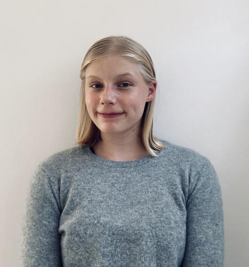
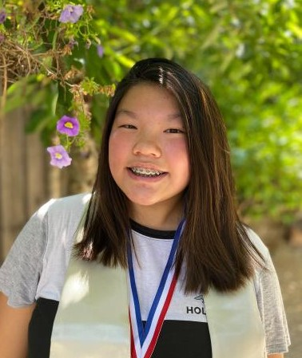

Naomi Porter
Naomi Porter is a 16-year-old serial entrepreneur, education reform advocate and public speaker
from Los Angeles, California. She is the C.E.O. of two businesses: Spice it Up and Bright Futures.
Naomi founded "EntrepreYOUership-You can do it too!" in 2019 to provide free entrepreneurial
education to youth. Her organization has served over 900 youth through 35+ workshops that equip
youth with an entrepreneurial mindset. Most recently, her advocacy and entrepreneurial work has
been featured in Forbes, Voyage LA Mag, and Wharton Business.

Emily Han
Emily Han is a Sophomore in Bay Area, California. As a 4-year Debate Competitor, 3-year Model
United Nations Competitor, and a Teen Entrepreneur, her passion for public speaking has led her to
co-found a worldwide nonprofit, Make a Statement (@projectmakeastatement), focusing on educating youth a
nd low-income students about public speaking. They hold interactive workshops, summer camps, debate
tournaments with a total audience of 600+ students from 25+ countries and 25+ states. During the summer,
Emily also works as a part-time Debate Coach Assistant, and she was selected to MIT LaunchX, a highly
selective Entrepreneurship Program, in the summer of 2021.

Priyanka Jhooty
Priyanka Jhooty is currently a 2nd year Computer Science student at Aston University, and former
Chair of the Aston Computer Science Society (ACSS) for 2020/21. As Lead Organiser for AstonHack 6
and a former volunteer Code Club, she realised the significance of engaging students with technology.
Utilising her talents to support communities is important to her, hence her role of Project Manager
in the first 48in48 Global Virtual Hackathon (where websites are created for non-profit organisations).
Whilst studying, Priyanka became conscious of the all-pervading force of technology, and thus believes
it is vital to create an inclusive and diverse work environment, to cater for our cosmopolitan world.

Sofia Penttila
Sofia is high school student living in the San Francisco Bay Area. She is the co-founder and
CEO of Gen Z: We Are The Future, an organization working to educate and mobilize Gen Zers to
tackle global issues. Gen Z: We Are The Future's team has over one hundred members from six
continents and caters to an audience of thousands of people worldwide. She also serves as the
Director of the Americas at the Cosmos Championship, an international debate tournament, and
a writer and researcher at Simplified, a media platform working to make politics accessible to
everyone. Sofia loves debating, Model UN, public speaking, writing, and exploring the worlds of
politics and social entrepreneurship!

Claire Yang
Claire is a high school freshman from the San Francisco Bay Area! She is the co-founder and
CEO of Gen Z: We Are The Future, a youth-led nonprofit organization with a mission of uniting
and amplifying Gen Z voices from all over the world. Outside of the organization, Claire is
the Partnerships Email Lead, a Graphic Designer, and a Website Designer at Zenerations, a
media website empowering the creatives, activists, entrepreneurs, and change makers of Generation Z.
She is also a Project Manager and Discord Moderator at Next GenerAsian, a Content Strategist at The
Cosmos Championship, and a Social Media Manager at YCAC! Claire loves playing and listening to music
as well as graphic designing, doing digital art, entrepreneurship, and public speaking!